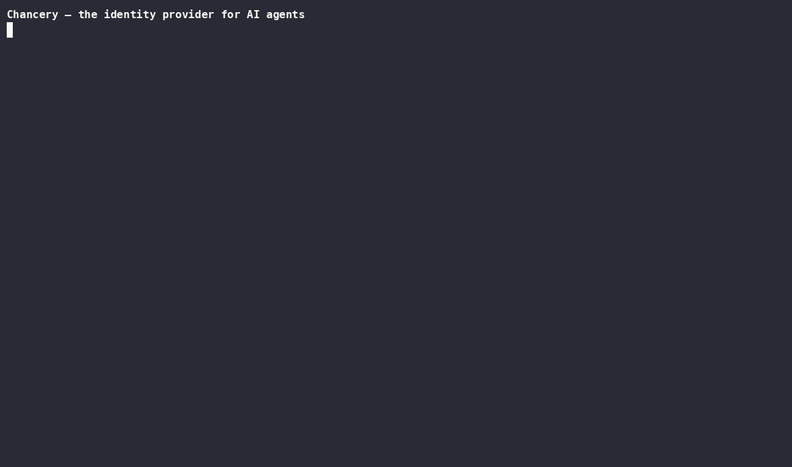

Your agents run on a shared API key, can't be stopped mid-task, and write their own logs. Chancery gives them what every other privileged identity already has: their own identity, scoped authority, instant revocation, and an audit trail they can't write to.

Agents usually share one API key — so you can't revoke one without breaking the rest, and you can't attribute an action to a specific agent.
A prompt injection isn't just bad output: it drives every tool the agent can reach. And "revoking" an agent usually means waiting for a token to expire, because nothing sits in the call path to stop the next action.
Worst of all, the logs are written by the agent — the exact component you stopped trusting the moment it was compromised.
Every agent registers with an accountable human owner and gets its own identity: agent → immutable version → revocable running instance. Change the prompt and it's a new version — "did this change since review?" is a hash comparison.
Authority is a writ: a signed chain where every delegation can only add restrictions. A sub-agent structurally cannot escalate — the block format has no field that could widen it.
The enforcement proxy re-reads live state on every tool call, so
writ revoke takes effect on the agent's next action — mid-session,
no restart, no waiting for a token to expire.
Credentials are sealed and injected into the tool server's environment at spawn — never into the agent's context. Prompt injection can't exfiltrate what was never there.
The first run pins your MCP server's code identity — image digest, whole
dependency tree, or binary hash — and refuses to start on drift.
--confine adds an egress allow-list and a read-only filesystem,
enforced by the OS.
Every decision is recorded by the gate, not the agent, in a hash-chained trail that detects any edit or deletion. Metadata-only by schema: prompts and payloads have nowhere to be stored.
Chancery sits in the stdio path between the agent and the tool server, so a prompt-injected agent can't talk its way around it.
# give an agent a scoped, expiring grant
chancery writ grant --for user:you@acme.com --to deploy-bot \
--cap "call:github/get_*" --ttl 8h
# run the real server behind the gate, with a sealed token
chancery mcp wrap --agent deploy-bot --writ <id> \
--secret GITHUB_TOKEN=github-token -- npx @acme/github-mcp
get_pull_request → ALLOW forwarded, attributed, recorded
delete_repo → DENY never reaches the server
# kill it mid-task — the next call fails, not the next token
chancery writ revoke <id>Chancery is a security product, so its own security posture is documented rather than implied: a full threat model (STRIDE, OWASP LLM and Agentic Top 10 mappings, abuse cases) and a table of every known gap — each with an owner and a phase.
Two promises: what ships open source stays Apache-2.0, no license flip ever; and security is never paywalled — every gap in that table closes in the open-source core.
Chancery is built as a series of locked RFCs — the problem, the alternatives considered, the decision, the trade-offs accepted, and the failure modes. If you want to know why something works the way it does, the argument is in the repo.